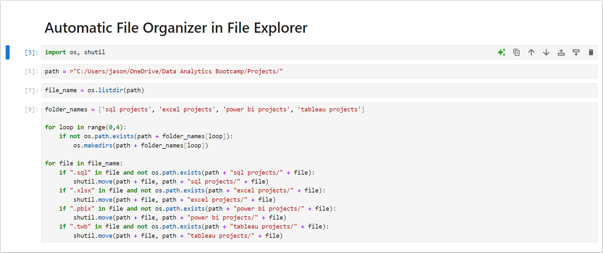
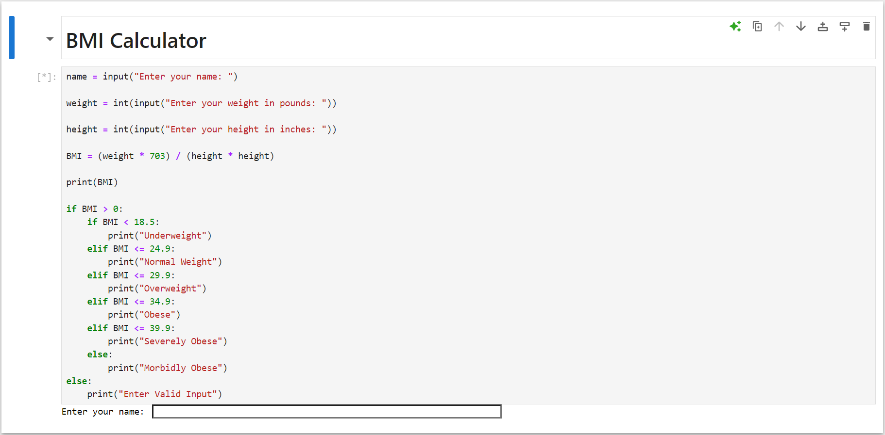

In this project, I analyzed restaurant sales data using MySQL and Tableau to uncover key trends in revenue, customer behavior, and operational efficiency.
The project includes data cleaning, exploratory analysis, and interactive visualizations that provide actionable business insights.

In this project, I performed data cleaning on a layoffs dataset using SQL. This included removing duplicates, standardizing values, handling nulls, correcting data formats, and ensuring consistency across key fields to prepare the data for analysis.


In this project, I conducted an exploratory analysis on a dataset of company layoffs, using SQL to aggregate, rank, and identify trends. Key insights included highest layoffs by year, companies with the most significant layoffs, and industry-wide layoff patterns.

In this project, I created an interactive dashboard to explore Airbnb listings in Seattle. The visualization provides insights into pricing, availability, and key patterns across neighborhoods, helping users make informed decisions based on location and seasonality.

In this project, I developed a Power BI dashboard to analyze survey responses from data professionals worldwide. The project provides insights into job satisfaction, career challenges, demographic trends, and preferences in the data field. Key findings include factors affecting career mobility, gender-based trends, and the most desired aspects of new job opportunities.

In this project, I performed data cleaning and analysis on a dataset of bike buyers using Excel. I then created pivot tables, charts, and an interactive dashboard to explore customer demographics and their impact on purchasing decisions. The project provides insights into factors influencing bike purchases, aiding in targeted marketing strategies.

In this project, I developed a Python script to automatically organize project files by their type using the os and shutil libraries. The script moves .sql, .xlsx, .pbix, and .twb files into corresponding folders, helping maintain a clean and well-structured directory for data analytics projects.

In this project, I developed a simple Python script to calculate Body Mass Index (BMI) based on user input for height and weight. The program provides a health categorization, such as 'Underweight,' 'Normal Weight,' or 'Obese,' based on BMI values. This project demonstrates basic user input handling, conditional logic, and mathematical calculations in Python.